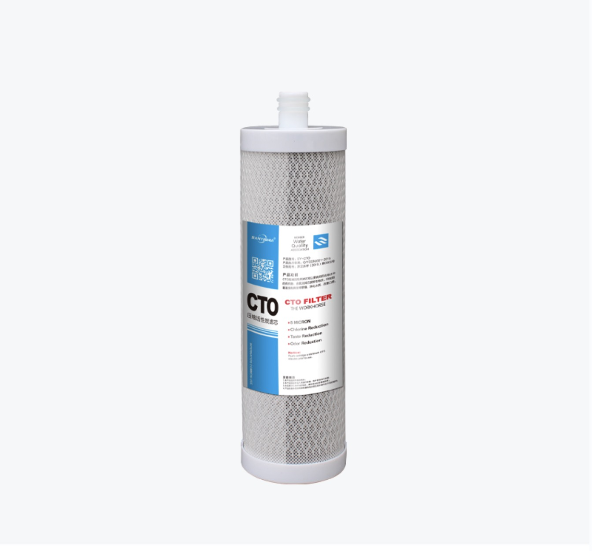

Professional Water Filtration Solutions Since 1998
Premium compressed activated carbon block filter providing superior chemical and taste removal. Advanced manufacturing process ensures consistent pore structure and maximum surface area.

| Carbon Type | Activated Carbon Block |
| Flow Rate | 0.75 GPM |
| Dimensions | 10" x 2.5" |
| Micron Rating | 0.5-10 micron |
| Certification | NSF 42, 53, 61 |
| Chlorine Capacity | 20,000 gallons |
| Lead Reduction | >99.3% |
| Cyst Reduction | >99.95% |
✓ Compressed carbon block technology
✓ Reduces chlorine, lead, cysts, VOCs
✓ Excellent taste and odor improvement
✓ High efficiency particulate removal
✓ Minimal pressure drop
✓ FDA compliant materials
Get professional consultation and competitive pricing for bulk orders. OEM/ODM services available.
📧 Email: expresswater025@gmail.com
☎️ Phone: +86-19908311885
📍 Location: Haining, Zhejiang, China